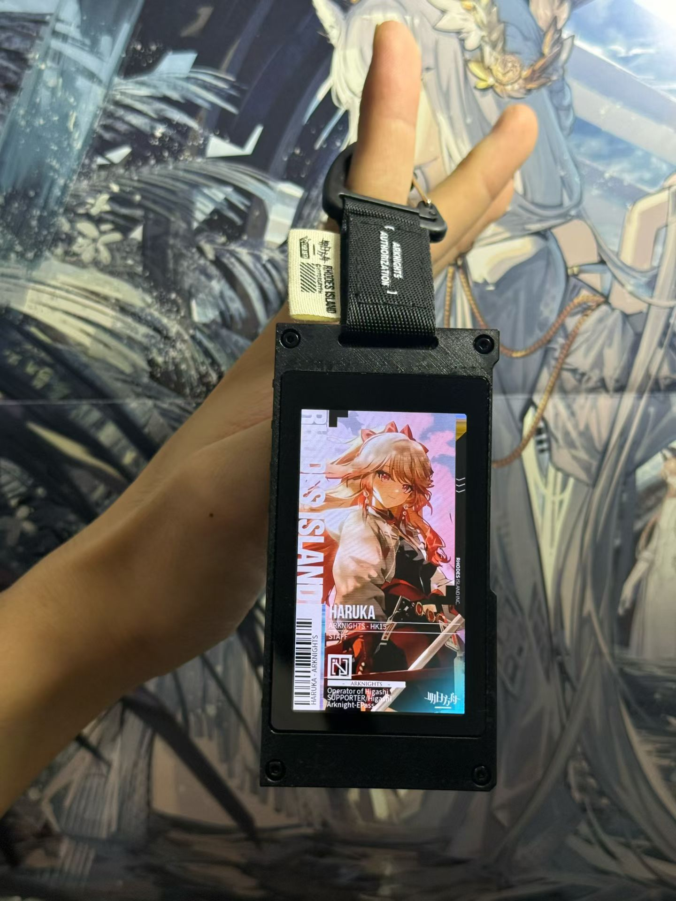
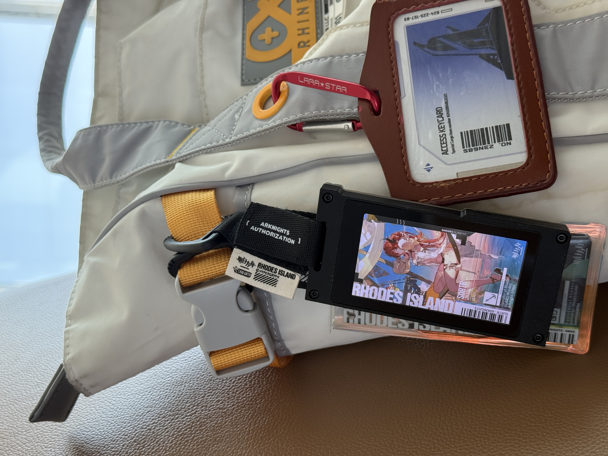

YANG YI / 1OGIC.CNNYA ↘
今天也要
认真写代码
认真写代码
01/04
COMPUTER SCIENCE STUDENT✳MAKER IN PROGRESS✳RHODES ISLAND SUPPORTER✳COMPUTER SCIENCE STUDENT✳MAKER IN PROGRESS✳RHODES ISLAND SUPPORTER
01 / 正在售卖
明日方舟
电子通行证
把罗德岛的日常装进一个可以带出门的实体小物件。下面是它在真实场景中的样子。


ORIGINAL PROJECT / 01
Rhodes Island e-Pass
一张属于博士和干员们的电子通行证。适合展会、漫展、日常通勤，也可以作为桌面上的小小收藏。
QQ 280409626
QQ 咨询购买 02 / 关于我
nya
↘
↘
还在学习，
也在把喜欢的事情认真做出来。
我是杨易，目前正在读计算机科学与技术。比起给自己贴一个很确定的标签，我更愿意持续尝试：写程序、做硬件、研究好玩的交互，然后把过程记录下来。
如果你也对技术、独立制作或明日方舟感兴趣，欢迎通过 QQ 联系我；如果只是有一句不方便署名的话，也可以去匿名提问。
03 / 最近动态